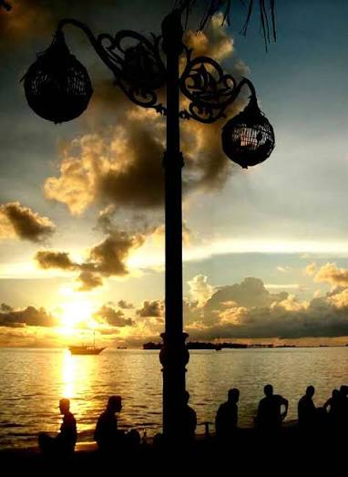
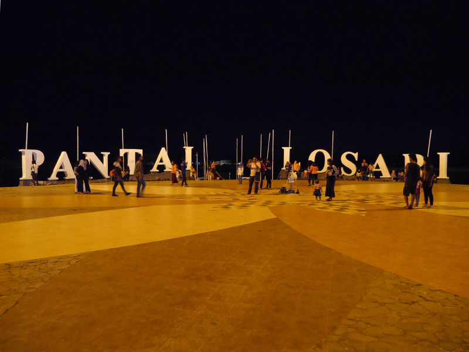
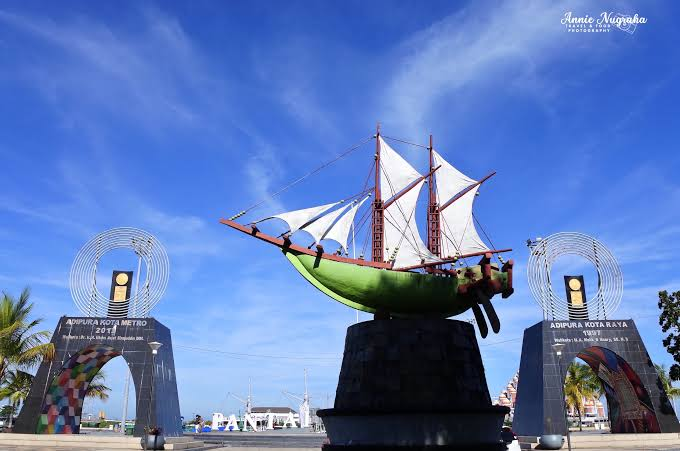

Pantai Losari adalah pantai yang terletak di pusat Kota Makassar dan menjadi salah satu destinasi wisata terkenal di Sulawesi Selatan. Tempat ini populer untuk menikmati matahari terbenam, pisang epe, dan suasana kota di tepi laut.
Informasi Utama
Galeri Foto



Daftar Aktivitas
- Menikmati sunset di tepi pantai
- Mencicipi pisang epe dan seafood
- Berjalan santai di anjungan pantai
- Berfoto di tulisan "Pantai Losari"
- Mengunjungi Masjid Terapung Amirul Mukminin
Informasi Lokasi
Jl. Penghibur, Losari, Kec. Ujung Pandang, Kota Makassar, Sulawesi Selatan.
Tabel Informasi
| Keterangan | Detail |
|---|---|
| Jam Operasional | 24 Jam |
| Harga Tiket | Gratis |
| Fasilitas | Kuliner, parkir, tempat duduk |
| Waktu Terbaik | Sore hari |
| © Info diperbarui tahun 2026 | |